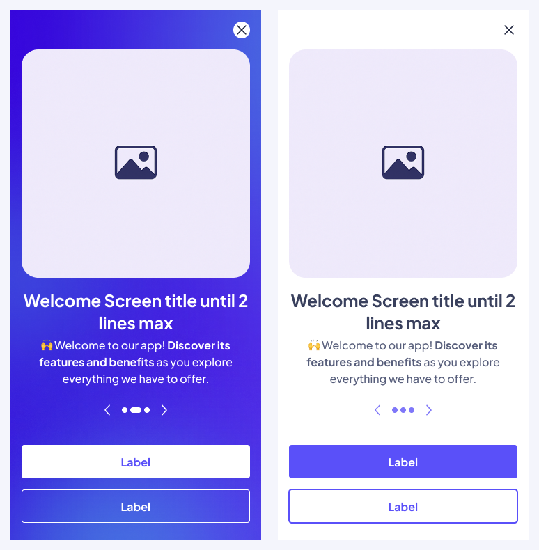
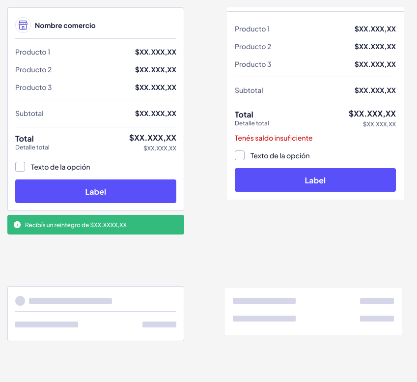
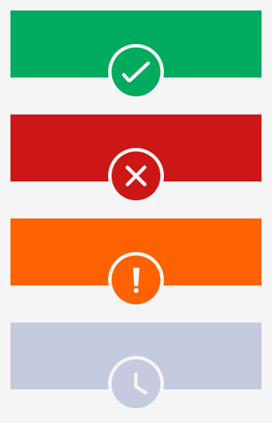
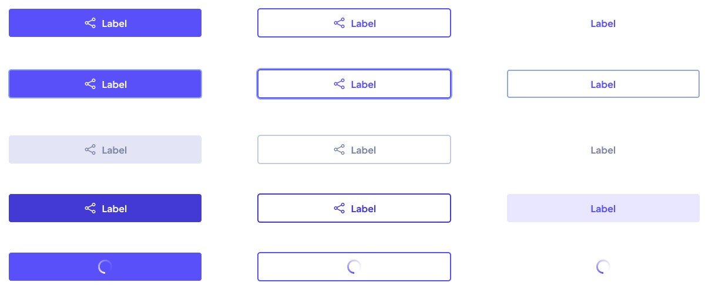
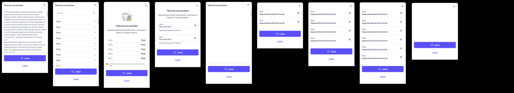
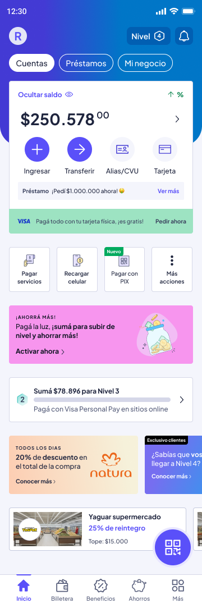
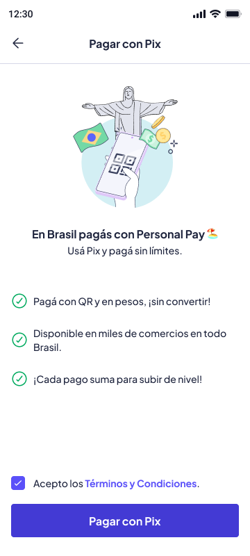
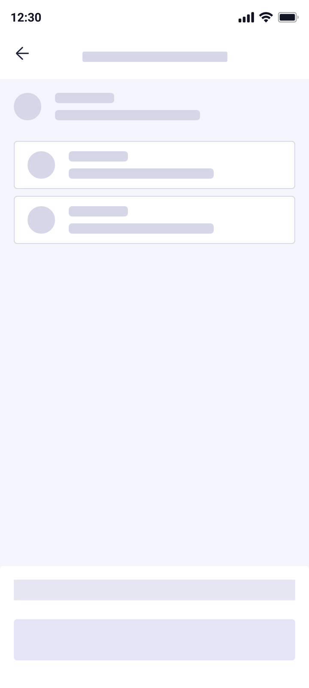
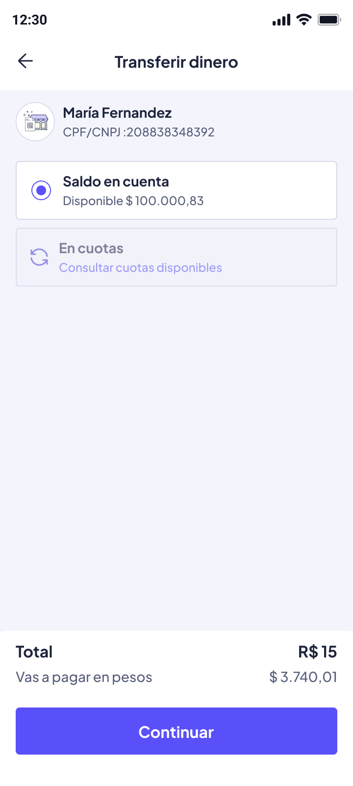
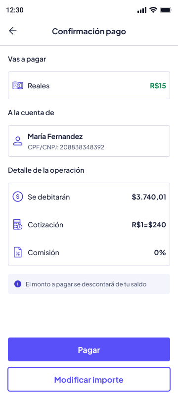

Habilitando pagos PIX en una billetera digital
Enabling PIX payments in a digital wallet
Diseñando un flujo confiable y sin fricciones para pagos internacionales con QR en Brasil—desde la hipótesis hasta el impacto medible.
Designing a reliable, frictionless flow for international QR payments in Brazil—from hypothesis to measurable impact.
Contexto
Context
¿Qué es PIX?
What is PIX?
PIX es el sistema de pagos instantáneos de Brasil, lanzado por el Banco Central en 2020. Permite transferencias instantáneas 24/7 usando códigos QR, números de teléfono o claves de cuenta.
PIX is Brazil's instant payment system, launched by the Central Bank in 2020. It enables instant 24/7 transfers using QR codes, phone numbers, or account keys.
Para 2024, PIX se había convertido en el método de pago dominante en Brasil, procesando más de 3 mil millones de transacciones mensuales y representando una integración crítica para cualquier billetera digital operando en el mercado.
By 2024, PIX had become the dominant payment method in Brazil, processing more than 3 billion transactions per month and representing a critical integration for any digital wallet operating in the market.
Por qué es relevante
Why it matters
Objetivo del proyecto
Project goal
Habilitar a los usuarios para realizar pagos PIX desde el saldo de su billetera digital, creando una experiencia rápida y confiable que reduzca la fricción en transacciones transfronterizas y aumente el engagement de la billetera para el mercado brasileño.
Enable users to make PIX payments directly from their digital wallet balance, creating a fast, reliable experience that reduces friction in cross-border transactions and increases wallet engagement for the Brazilian market.
Problema a resolver
Problem to solve
Los flujos de pago internacionales involucran múltiples puntos de fricción: conversión de moneda, comisiones poco claras, largos tiempos de espera y barreras de confianza. Para usuarios no familiarizados con PIX, estas preocupaciones se amplifican.
International payment flows involve multiple friction points: currency conversion, unclear fees, long wait times, and trust barriers. For users unfamiliar with PIX, these concerns are amplified.
Brecha de confianza
Trust gap
Mostramos comisión antes de confirmar y emitimos comprobante inmediato con ID PIX para trazabilidad.
We show the fee before confirmation and issue an immediate receipt with a PIX ID for traceability.
Principalidad:
Core promise:
Pagá en Brasil por QR, en segundos y 24×7: escaneás, confirmás y el comercio recibe en BRL; conversión automática desde tu saldo en ARS.
Pay in Brazil by QR, in seconds, 24/7: scan, confirm, and the merchant receives BRL; automatic conversion from your ARS balance.
Estrategia y escala
Strategy and scale
El patrón QR se reutiliza para Paraguay, acelera el time-to-market y empuja TPV en viajes y cross-border.
The QR pattern is reused for Paraguay, accelerating time-to-market and driving TPV in travel and cross-border use cases.
Qué estaba en juego
What was at stake
Más allá de la frustración del usuario, los flujos de pago poco claros impactan directamente en:
Beyond user frustration, unclear payment flows directly impact:
- •Tasas de conversión — los usuarios abandonan antes de completar la primera transacción
- •Volumen de soporte — tickets de "¿dónde está mi dinero?" aumentan los costos operativos
- •Retención — una experiencia negativa inicial previene el uso repetido
- •Conversion rates — users drop off before completing their first transaction
- •Support volume — "where's my money?" tickets increase operational costs
- •Retention — a poor first experience prevents repeat usage
Rol y Responsabilidades
Role and Responsibilities
Lidero el equipo de Cash Management con un enfoque estratégico, trabajando en estrecha colaboración con el liderazgo técnico para impulsar la visión de producto y su ejecución. Mi rol conecta estrategia y entrega —desde la ejecución del roadmap hasta la coordinación cross-functional con compliance y el Banco Central de Brasil— asegurando que nuestras iniciativas se alineen con los objetivos del negocio mientras mantenemos la excelencia operativa y regulatoria.
I lead the Cash Management team with a strategic focus, working closely with technical leadership to drive product vision and execution. My role bridges strategy and delivery — from roadmap execution to cross-functional coordination with compliance and Brazil's Central Bank — ensuring our initiatives align with business goals while maintaining operational and regulatory excellence.
Liderazgo de Equipos
Team Leadership
Experiencia liderando tribus y equipos multidisciplinarios incluyendo producto, diseñadores y especialistas UX. Ownership end-to-end del diseño desde research hasta implementación final.
Experience leading tribes and multidisciplinary teams including product, designers, and UX specialists. End-to-end design ownership from research through final implementation.
Ejecución Estratégica
Strategic Execution
Impulso la ejecución del roadmap, gestiono dependencias entre equipos, desbloqueo iniciativas y coordino esfuerzos en toda la organización de Payments.
I drive roadmap execution, manage cross-team dependencies, unblock initiatives, and coordinate efforts across the Payments organization.
Cumplimiento normativo
Regulatory Compliance
Aseguro el cumplimiento regulatorio antes del lanzamiento, en coordinación con equipos de compliance y con el Banco Central de Brasil.
I ensure regulatory compliance ahead of launch, coordinating with compliance teams and Brazil's Central Bank.
Adopción post-lanzamiento
Post-launch Adoption
Aseguro la claridad de comunicación y los canales de soporte necesarios para una adopción temprana confiable y sin fricción innecesaria.
I ensure clear communication and the support channels needed for reliable early adoption without unnecessary friction.
Ownership de diseño
Design ownership
- •Definir el flujo de pago end-to-end y los puntos de decisión críticos
- •Diseño de estados de error y paths de recuperación para minimizar abandono
- •Copy y microinteracciones orientadas a construir confianza en momentos de alta fricción
- •Experiencias de recibo y confirmación para incrementar confianza
- •Defining the end-to-end payment flow and critical decision points
- •Designing error states and recovery paths to minimize drop-off
- •Copy and microinteractions aimed at building trust at high-friction moments
- •Receipt and confirmation experiences to increase trust

Hipótesis y supuestos
Hypothesis and assumptions
Si proporcionamos feedback claro e inmediato en cada paso—especialmente sobre timing, montos y confirmación—los usuarios confiarán lo suficiente en el flujo para completar su primera transacción y regresar para pagos subsecuentes.
If we provide clear, immediate feedback at every step—especially around timing, amounts, and confirmation—users will trust the flow enough to complete their first transaction and return for subsequent payments.
Supuestos clave
Key assumptions
Los usuarios esperan confirmación instantánea. Cualquier demora crea dudas e inquiries de soporte.
Users expect instant confirmation. Any delay creates doubt and support inquiries.
En flujos financieros, los usuarios prefieren explicaciones explícitas sobre copy minimalista.
In financial flows, users prefer explicit explanations over minimalist copy.
Los pagos fallidos necesitan guía inmediata y accionable para prevenir abandono.
Failed payments need immediate, actionable guidance to prevent drop-off.
La prueba visual de la transacción incrementa la confianza y reduce la ansiedad.
Visual proof of the transaction increases trust and reduces anxiety.
Qué priorizamos
What we prioritized
Debido a las limitaciones de tiempo, recursos y requisitos regulatorios, nos enfocamos en:
Given constraints on time, resources, and regulatory requirements, we focused on:
- 1.Simplificar el flujo de escaneo QR → confirmación para minimizar pasos
- 2.Mostrar confirmacion del pago (monto, destinatario, comisiones) para verificar los datos
- 3.Diseñar estados claros de éxito/error
- 1.Simplifying the QR scan → confirmation flow to minimize steps
- 2.Showing payment confirmation (amount, recipient, fees) to verify the details
- 3.Designing clear success/error states
Arquitectura del Flujo
Flow Architecture
Divergir para entender. Converger para ejecutar.
Diverge to understand. Converge to execute.
La experiencia del usuario debía ser simple. Internamente, el sistema contemplaba múltiples validaciones, estados intermedios y decisiones dependientes de respuestas externas. Primero exploramos distintas alternativas y riesgos del flujo; luego convergimos en un MVP claro, reutilizando el sistema de diseño para cumplir con el deadline sin comprometer la experiencia.
The user experience had to be simple. Internally, the system involved multiple validations, intermediate states, and decisions dependent on external responses. We first explored different alternatives and flow risks, then converged on a clear MVP, reusing the design system to meet the deadline without compromising the experience.

Reutilización estratégica del Design System
Strategic reuse of the Design System
Construir el flujo 100% sobre componentes existentes fue una decisión estratégica deliberada: evitar la creación de patrones nuevos para priorizar consistencia, velocidad y alineación con el deadline.
Building the flow 100% on existing components was a deliberate strategic decision: avoiding new patterns to prioritize consistency, speed, and alignment with the deadline.
- ⚙️ Construir el flujo 100% sobre componentes existentes
- ⚙️ Evitar creación de patrones nuevos
- ⚙️ Priorizar consistencia y velocidad
- ⚙️ Build the flow 100% on existing components
- ⚙️ Avoid creating new patterns
- ⚙️ Prioritize consistency and speed
- 🚀 Componentes previamente testeados
- 🚀 Reducción de validaciones adicionales
- 🚀 Menor retrabajo con desarrollo
- 🚀 Aceleración del time-to-market
- 🚀 Previously tested components
- 🚀 Fewer additional validations needed
- 🚀 Less rework with development
- 🚀 Faster time-to-market
- 🛡 Familiaridad para el usuario
- 🛡 Consistencia visual
- 🛡 Reducción de fricción
- 🛡 User familiarity
- 🛡 Visual consistency
- 🛡 Reduced friction
Componentes reutilizados (Fractal DS)
Reused components (Fractal DS)





Exploración y decisiones de diseño
Exploration and design decisions
Estados de error y recuperación
Error and recovery states
- Saldo insuficiente: monto exacto faltante + acción "Agregar fondos" —34% de abandono
- QR vencido/inválido: mensaje claro + "Escanear de nuevo" —89% completó el pago en el reintento
- Errores de red/timeout: fondos seguros + ID de tracking —56% menos tickets de soporte
- Insufficient balance: exact missing amount + "Add funds" action —34% drop-off
- Expired/invalid QR: clear message + "Scan again" —89% completed payment on retry
- Network/timeout errors: funds secured + tracking ID —56% fewer support tickets
Confirmación de los pagos
Payment confirmation
Recibos descargables con ID de transacción y confirmación del destinatario, para dar tranquilidad inmediata y referencia futura.
Downloadable receipts with transaction ID and recipient confirmation, providing immediate peace of mind and future reference.
62% de los usuarios descargó su primer recibo, bajando a 23% en transacciones subsecuentes—el recibo construye confianza inicial pero se vuelve menos crítico con el tiempo.
62% of users downloaded their first receipt, dropping to 23% on subsequent transactions—the receipt builds initial trust but becomes less critical over time.
Estados críticos del sistema
Critical system states
En un flujo asincrónico con dependencia externa, la incertidumbre es el mayor riesgo para el usuario. Diseñamos cada estado del sistema con copy específico y acciones claras para reducir ansiedad, evitar abandono y guiar al usuario hacia la resolución.
In an asynchronous flow with an external dependency, uncertainty is the biggest risk to the user. We designed every system state with specific copy and clear actions to reduce anxiety, prevent drop-off, and guide the user toward resolution.
Decisión estratégica
Strategic decision
- Priorizamos claridad sobre sofisticación visual
- Definimos acciones explícitas en cada estado
- Evitamos estados ambiguos o sin salida clara
- We prioritized clarity over visual sophistication
- We defined explicit actions for every state
- We avoided ambiguous states with no clear way out
Enfoque en lenguaje
Language focus
- Iteramos microcopys con apoyo de IA para evaluar claridad y tono
- Priorizamos mensajes accionables y específicos en cada estado
- We iterated microcopy with AI support to assess clarity and tone
- We prioritized actionable, specific messages for every state
La confirmación de pago fue el estado más crítico a diseñar: el usuario ya operó, pero el sistema aún no confirmó. Esa breve ventana de espera es donde más se pierde la confianza si no hay feedback claro.
Payment confirmation was the most critical state to design: the user has already acted, but the system hasn't confirmed yet. That brief waiting window is where trust is lost fastest without clear feedback.

Copy: "¡Listo! Ya pagaste" - Confirmación clara con detalles del pago y opción de compartir comprobante
Copy: "Done! Payment sent" - Clear confirmation with payment details and an option to share the receipt

Copy: "El QR expiró" - Error específico con instrucción clara y botón de acción directa para reintentar
Copy: "The QR code expired" - Specific error with clear instructions and a direct action button to retry

Copy: "Estamos procesando tu transferencia" - Estado actual con expectativa de tiempo y tranquilidad
Copy: "We're processing your transfer" - Current status with a time expectation and reassurance
Estrategia de microcopy
Microcopy strategy
- • Usar lenguaje específico y accionable
- • Establecer expectativas claras de tiempo
- • Proporcionar siguiente paso inmediato
- • Mostrar IDs de transacción para tracking
- • Use specific, actionable language
- • Set clear time expectations
- • Provide an immediate next step
- • Show transaction IDs for tracking
- • Copy genérico sin contexto ("Error")
- • Tiempos vagos ("Pronto", "En breve")
- • Estados sin acción clara
- • Jerga técnica o códigos de error
- • Generic copy with no context ("Error")
- • Vague timing ("Soon", "Shortly")
- • States with no clear action
- • Technical jargon or error codes
Flujo de pago
Payment flow
El flujo final prioriza transparencia y velocidad mientras mantiene compliance regulatorio. Cada paso muestra información crítica en el momento correcto.
The final flow prioritizes transparency and speed while maintaining regulatory compliance. Each step surfaces critical information at the right moment.
Escanear código QR
Scan QR code
Paso 1Step 1El usuario abre la cámara y escanea el código QR de PIX. La validación online verifica si el código es válido antes de proceder al siguiente paso.
The user opens the camera and scans the PIX QR code. Online validation checks whether the code is valid before proceeding to the next step.
- • Feedback inmediato de validación (QR inválido = error instantáneo)
- • Immediate validation feedback (invalid QR = instant error)
Conversión automática
Automatic conversion
Paso 2Step 2Todos los detalles de la conversion mostrados en una sola pantalla
All conversion details shown on a single screen
- • Primaria: Monto (grande, bold)
- • Secundaria: Nombre del destinatario y número de cuenta parcial
- • Terciaria: Tasa de conversión y desglose de comisiones (expandible)
- • Primary: Amount (large, bold)
- • Secondary: Recipient name and partial account number
- • Tertiary: Conversion rate and fee breakdown (expandable)
Confirmar pago
Confirm payment
Paso 3Step 3nombre/cuenta del destinatario, Detalles del pago: monto en BRL y moneda del usuario, tasa de conversión y todas las comisiones.
recipient name/account, payment details: amount in BRL and the user's currency, conversion rate, and all fees.
- • Éxito: Check verde + "Datos del usuario y monto enviado" +
- • Procesando: Estado de carga
- • Error: Tipo de error específico + acción de recuperación
- • Success: Green check + "User details and amount sent" +
- • Processing: Loading state
- • Error: Specific error type + recovery action
Recibo y confirmación
Receipt and confirmation
CompletoCompletePantalla de éxito con resumen de transacción, recibo descargable y opción para volver a la billetera o hacer otro pago.
Success screen with a transaction summary, downloadable receipt, and the option to return to the wallet or make another payment.
- • ID de transacción para tracking
- • Confirmación de completitud
- • Opción de compartir o descargar recibo
- • Transaction ID for tracking
- • Completion confirmation
- • Option to share or download the receipt
Momentos críticos en el flujo
Critical moments in the flow
A lo largo del flujo, optimizamos para tres momentos de alta ansiedad:
Throughout the flow, we optimized for three high-anxiety moments:
Mostrar todos los costos por adelantado—sin sorpresas después del compromiso
Show all costs upfront—no surprises after commitment
Establecer expectativas claras de tiempo para reducir incertidumbre
Set clear time expectations to reduce uncertainty
Proporcionar prueba tangible (recibo) para construir confianza
Provide tangible proof (a receipt) to build trust
Diseño visual del flujo
Visual flow design
Visualización del flujo completo desde el acceso en el home hasta la confirmación final del pago.
Visualization of the full flow, from home screen access to final payment confirmation.
Qué incluimos en el MVP
What we included in the MVP
Alcance priorizado para garantizar una salida en tiempo y una experiencia confiable. Incluimos lo estrictamente necesario para garantizar una transacción clara, segura y alineada a normativa.
Prioritized scope to ensure an on-time launch and a reliable experience. We included exactly what was necessary for a clear, secure, and compliant transaction.
- 1
Selección clara de PIX como método de pago
Clear selection of PIX as the payment method
- 2
Generación de orden con conversión automática ARS → BRL
Order generation with automatic ARS → BRL conversion
- 3
Estados de confirmación claros: pendiente, éxito, error
Clear confirmation states: pending, success, error
- 4
Mensajes claros en validaciones y errores accionables
Clear messages for validations and actionable errors

Mapeo del flujo de usuario completo mostrando puntos de decisión críticos
Full user flow mapping showing critical decision points

Acceso directo a "Pagar con PIX" desde las acciones del home
Direct access to "Pay with PIX" from home screen actions

Contexto del beneficio y aceptación de Términos y Condiciones
Benefit context and Terms and Conditions acceptance

Validación en tiempo real del código con cotización estimada
Real-time code validation with an estimated exchange rate

Ingreso de monto con conversión automática ARS→BRL
Amount entry with automatic ARS→BRL conversion

Estado de carga antes de que se visualicen los medios de pago
Loading state before payment methods are displayed

Selección de saldo en cuenta o pago en cuotas
Selection of account balance or installment payment

Revisión final con desglose completo de comisiones
Final review with a complete fee breakdown
Confirmación clara con opción de compartir comprobante
Clear confirmation with an option to share the receipt
Impacto y métricas
Impact and metrics
Iteraciones
Iterations
Los errores percibidos en el escaneo estaban causados por condiciones de red, no por la cámara ni el QR.
The perceived scanning errors were caused by network conditions, not the camera or the QR code.
Las personas que se contactaban con el soporte eran para consultar por el tipo de cambio y funcionamientoo
Users who contacted support were asking about the exchange rate and how the flow worked.
Impacto en el negocio
Business impact
Las transacciones PIX generaron en ingresos por comisiones en el primer mes, superando las proyecciones iniciales en 45%.
PIX transactions generated fee revenue in the first month, exceeding initial projections by 45%.
Los usuarios que completaron un pago PIX mostraron 3.2x mayor uso general de la billetera comparado con usuarios no-PIX.
Users who completed a PIX payment showed 3.2x higher overall wallet usage compared to non-PIX users.
Aprendizajes
Learnings
Qué funcionó bien
What worked well
- •Divulgación progresiva de complejidadProgressive disclosure of complexity
Mostrar info esencial primero, con desgloses de comisiones y detalles de conversión expandibles, mantuvo el flujo simple sin ocultar información importante. Los usuarios apreciaron la opción de profundizar cuando lo necesitaban.
Showing essential info first, with expandable fee breakdowns and conversion details, kept the flow simple without hiding important information. Users appreciated the option to dig deeper when they needed to.
- •Establecer expectativas de tiempoSetting time expectations
Ser explícito sobre "segundos, no minutos" ayudó a manejar la ansiedad durante la breve ventana de procesamiento. Los usuarios sabían qué esperar.
Being explicit about "seconds, not minutes" helped manage anxiety during the brief processing window. Users knew what to expect.
Qué ajustamos post-lanzamiento
What we adjusted post-launch
- •Fallas por latencia en redes localesFailures from local network latency
Detectamos un 2% de fallas causadas por latencia en redes locales de Brasil, no por errores del usuario ni del QR. Ajustamos los tiempos de espera y mejoramos el ancho de banda para absorber esas intermitencias.
We identified a 2% failure rate caused by latency in Brazil's local networks, not by user or QR errors. We adjusted timeouts and improved bandwidth to absorb that intermittency.
- •Timing de transparencia de comisionesTiming of fee transparency
Originalmente mostramos las comisiones en la pantalla de confirmación final. Las movimos al paso de revisión después de que los usuarios expresaron sorpresa. Pequeño cambio, gran impacto en confianza.
We originally showed fees on the final confirmation screen. We moved them to the review step after users expressed surprise. A small change with a big impact on trust.
Cómo evolucionó el producto
How the product evolved
- •Rediseño del onboardingOnboarding redesign
Con los datos del primer mes, rediseñamos el onboarding para mejorar la adopción temprana y reducir la curva de aprendizaje en el primer uso de PIX.
Using data from the first month, we redesigned onboarding to improve early adoption and reduce the learning curve for first-time PIX use.
- •Extensión a Llave PIXExtension to PIX Key
El éxito del MVP habilitó la extensión del flujo a Llave PIX, ampliando las formas en que los usuarios pueden iniciar una transacción más allá del escaneo de QR.
The MVP's success enabled extending the flow to PIX Key, expanding the ways users can initiate a transaction beyond QR scanning.
Iteraciones post-lanzamiento
Post-launch iterations


Próximos pasos y evolución
Next steps and evolution
Mejoras planificadas
Planned improvements
Sugerencias inteligentes de monto
Smart amount suggestions
Para pagos de remesas (servicios, etc.), pre-llenar montos exactos desde el input para eliminar entrada manual y reducir errores.
For remittance payments (bills, etc.), pre-fill exact amounts from input to eliminate manual entry and reduce errors.
Historial de pagos e insights
Payment history and insights
Mostrar patrones de gasto y categorización para pagos PIX para ayudar a los usuarios a trackear a dónde va el dinero, aumentando el uso de la billetera.
Show spending patterns and categorization for PIX payments to help users track where their money goes, increasing wallet usage.
Consideraciones de escalabilidad
Scalability considerations
A medida que crece la adopción de PIX, el sistema de diseño necesita evolucionar para soportar:
As PIX adoption grows, the design system needs to evolve to support:
- •Expansión multi-moneda: Adaptar el flujo para otros sistemas de pago instantáneo (LATAM) con rediseño mínimo
- •Mayores volúmenes de transacciones: Optimizar performance y manejo de errores a medida que las transacciones diarias escalen de miles a cientos de miles
- •Agregar otras opciones de pago: Se esta trabajando en la integracion de llave Pix
- •Multi-currency expansion: Adapting the flow to other instant payment systems (LATAM) with minimal redesign
- •Higher transaction volumes: Optimizing performance and error handling as daily transactions scale from thousands to hundreds of thousands
- •Adding other payment options: We're currently working on PIX Key integration